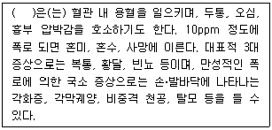
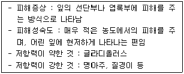
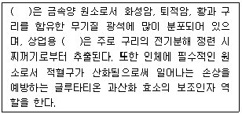
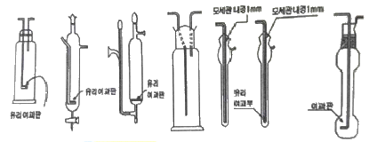
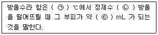
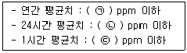
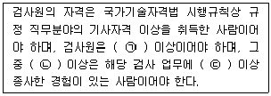
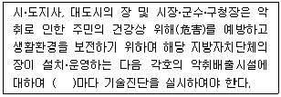

대기환경산업기사 (2018-04-28 기출문제)
1과목: 대기오염개론
1. 다음 중 리차드슨 수에 대한 설명으로 가장 적합한 것은?
- 리차드슨 수가 큰 음의 값을 가지면 대기는 안정한 상태이며, 수직방향의 혼합은 없다.
- 리차든스 수가 0에 접근할수록 분산이 커진다.
- 리차든스 수는 무차원수로 대류난류를 기계적인 난류로 전환시키는 율을 측정한 것이다.
- 리차든스 수가 0.25보다 크면 수직방향의 혼합이 커진다.
(정답률: 73%)

2. 대기의 상태가 약한 역전일 때 풍속은 3m/s이고, 유효 굴뚝 높이는 78m이다. 이때 지상의 오염물질이 최대 농도가 될 때의 착지거리는? (단, sutton의 최대착지거리의 관계식을 이용하여 계산하고, Ky, Kz는 모두 0.13, 안정도 계수(n)는 0.33을 적용할 것)
- 2123.9 m
- 2546.8 m
- 2793.2 m
- 3013.8 m
(정답률: 51%)
3. 경도모델(K-이론모델)의 가정으로 옳지 않은 것은?
- 오염물질은 지표를 침투하며 반사되지 않는다.
- 배출원에서 오염물질의 농도는 무한하다.
- 풍하측으로 지표면은 평평하고 균등하다.
- 풍하쪽으로 가면서 대기의 안정도는 일정하고 확산계수는 변하지 않는다.
(정답률: 70%)
4. 다음 중 “CFC-114" 의 화학식 표현으로 옳은 것은?
- CCl3F
- CClF2ㆍCClF2
- CCl2FㆍCClF2
- CCl2FㆍCCl2F
(정답률: 76%)
5. A공장에서 배출되는 이산화질소의 농도가 770ppm이다. 이 공장에서 시간당 배출가스량이 108.2Sm3라면 하루에 발생되는 이산화질소는 몇 kg인가? (단, 표준상태 기준, 공장은 연속 가동됨)
- 1.71
- 2.58
- 4.11
- 4.56
(정답률: 58%)
6. 다음 중 이산화황에 약한 식물과 가장 거리가 먼 것은?
- 보리
- 담배
- 옥수수
- 자주개나리
(정답률: 74%)
7. “수용모델”에 관한 설명으로 가장 거리가 먼 것은?
- 새로운 오염원, 불확실한 오염원과 불법 배출 오염원을 정량적으로 확인 평가할 수 있다.
- 지형, 기상학적 정보 없이도 사용 가능하다.
- 측정자료를 입력자료로 사용하므로 시나리오 작성이 용이하다.
- 현재나 과거에 일어났던 일을 추정하여 미래를 위한 계획을 세울 수 있으나 미래 예측은 어렵다.
(정답률: 72%)
8. 어떤 대기오염 배출원에서 아황산가스를 0.7%(V/V)포함한 물질이 47m3/s로 배출되고 있다. 1년 동안 이 지역에서 배출되는 아황산가스의 배출량은? (단, 표준상태를 기준으로 하며, 배출원은 연속가동 된다고 한다.)
- 약 29,644t
- 약 48,398t
- 약 57,983t
- 약 68,000t
(정답률: 58%)
9. 주변환경 조건이 동일하다고 할 때, 굴뚝의 유효고도가 1/2로 감소한다면 하류 중심선의 최대지표농도는 어떻게 변화하는가? (단, sutton의 확산식을 이용)
- 원래의 1/4
- 원래의 1/2
- 원래의 4배
- 원래의 2배
(정답률: 73%)
10. 2차 대기오염물질로만 옳게 나열한 것은?
- O3, NH3
- SiO2, NO2
- HCl, PAN
- H2O2, NOCl
(정답률: 80%)
11. 대기권의 성질에 대한 설명 중 옳지 않은 것은?
- 대류권의 높이는 보통 여름철보다는 겨울철에, 저위도보다는 고위도에서 낮게 나타난다.
- 대기의 밀도는 기온이 낮을수록 높아지므로 고도에 따른 기온분포로부터 밀도분포가 결정된다.
- 대류권에서의 대기 기온체감률은 -1℃/100m이며, 기온변화에 따라 비교적 비균질한 기층(heterogeneous layer)이 형성된다.
- 대기의 상하운동이 활발한 정도를 난류강도라 하고, 이는 열적인 난류와 역학적인 난류가 있으며, 이들을 고려한 안정도로서 리차드슨 수가 있다.
(정답률: 67%)
12. 다음은 대기오염물질이 인체에 미치는 영향에 관한 설명이다. ( )안에 가장 적합한 것은?

- 납
- 수은
- 비소
- 망간
(정답률: 71%)
13. 오존 전량이 330DU이라는 것을 오존의 양을 두께로 표시하였을 때 어느 정도인가?
- 3.3 mm
- 3.3 cm
- 330 mm
- 330 cm
(정답률: 76%)
14. 교토의정서상 온실효과에 기여하는 6대 물질과 거리가 먼 것은?
- 이산화탄소
- 메탄
- 과불화규소
- 아산화질소
(정답률: 73%)
15. 입자의 커닝험(Cunningham) 보정계수(Cf)에 관한 설명으로 가장 적합한 것은?
- 커닝험계수 보정은 입경 d 》 3μm일 때, Cf ＞ 1 이다.
- 커닝험계수 보정은 입경 d 《 3μm일 때, Cf = 1 이다.
- 유체 내를 운동하는 입자직경이 항력계수에 어떻게 영향을 미치는 가를 설명하는 것이다.
- 커닝험계수 보정은 입경 d 》 3μm일 때, Cf ＜ 1 이다.
(정답률: 66%)
16. 다음 중 메탄의 지표부근 배경농도 값으로 가장 적합한 것은?
- 약 0.15 ppm
- 약 1.5 ppm
- 약 30 ppm
- 약 300 ppm
(정답률: 65%)
17. 다음 대기오염물질 중 아래 표와 같이 식물에 대한 특성을 나타내는 것으로 가장 적합한 것은?

- SO2
- O3
- PAN
- 불소화합물
(정답률: 70%)
18. 다음 대기오염물질과 주요 배출관련 업종의 연결이 잘못 짝지어진 것은?
- 염화수소 - 소다공업, 활성탄 제조
- 질소산화물 - 비료, 폭약, 필름제조
- 불화수소 - 인산비료공업, 유리공업, 요업
- 염소 - 용광로, 식품가공
(정답률: 75%)
19. 정상적인 대기의 성분을 농도(V/V%)순으로 표시하였다. 올바른 것은?
- N2 ＞ O2 ＞ Ne ＞ CO2 ＞ Ar
- N2 ＞ O2 ＞ Ar ＞ CO2 ＞ Ne
- N2 ＞ O2 ＞ CO2 ＞ Ar ＞ Ne
- N2 ＞ O2 ＞ CO2 ＞ Ne ＞ Ar
(정답률: 75%)
20. 다음 ( ) 안에 공통으로 들어갈 물질은?

- Ca
- Ti
- V
- Se
(정답률: 69%)
2과목: 대기오염 공정시험 기준(방법)
21. 다음 분석대상물질과 그 측정법과의 연결이 잘못 짝지어진 것은?
- 시안화수소 - 피리딘 피라졸론법
- 포름알데히드 - 크로모트로핀산법
- 황화수소 - 메틸렌블루법
- 불소화합물 - 페놀디설폰산법
(정답률: 67%)
22. 굴뚝 배출가스 중의 먼지측정 시 등속흡입 정도를 알기 위한 등속흡입계수 I(%) 범위기준은? (단, 다시 시료채취를 행하지 않는 범위기준)(오류 신고가 접수된 문제입니다. 반드시 정답과 해설을 확인하시기 바랍니다.)
- 90 ~ 110%
- 95 ~ 115%
- 95 ~ 110%
- 90 ~ 1⑤%
(정답률: 72%)
23. 자외선가시선분광법 분석장치 구성에 관한 설명으로 옳지 않은 것은?
- 일반적인 장치 구성순서는 시료부 - 광원부 - 파장선택부 - 측광부 순이다.
- 단색장치로는 프리즘, 회절격자 또는 이 두가지를 조합시킨 것을 사용하며 단색광을 내기 위하여 슬릿(slit)을 부속시킨다.
- 광전관, 광전자증배관은 주로 자외 내지 가시파장 범위에서, 광전도셀은 근적외 파장범위에서 사용한다.
- 광전분광광도계에는 미분측광, 2파장측광, 시차측광이 가능한 것도 있다.
(정답률: 71%)
24. 대기오염물질의 시료 채취에 사용되는 그림과 같은 기구를 무엇이라 하는가?

- 흡수병
- 진공병
- 채취병
- 채취관
(정답률: 76%)
25. 굴뚝 배출가스 중의 산소를 자동으로 측정하는 방법으로 원리면에서 자기식과 전기화학식 등으로 분류할 수 있다. 다음 중 전기화학식 방식에 해당하지 않는 것은?
- 정전위 전해형
- 덤벨형
- 폴라로그래프형
- 갈바니전지형
(정답률: 79%)
26. 배출허용기준 시험방법에 준하여 질소산화물(표준산소 농도를 적용받음) 실측농도를 측정한 결과 280ppm이었고, 실측 산소농도가 3.7%이다. 표준산소 농도로 보정한 질소산화물 농도는 얼마인가? (단, 표준산소 농도 : 4%)
- 265 ppm
- 270 ppm
- 275 ppm
- 285 ppm
(정답률: 58%)
27. 자동연속측정기에 의한 아황산가스의 불꽃광도측정법에서 시료를 공기 또는 질소로 묽힌 후 수소불꽃 중에 도입하여 발광광도를 측정하여야 하는 파장은?
- 265nm 부근
- 394nm 부근
- 470nm 부근
- 560nm 부근
(정답률: 53%)
28. 시험에 사용하는 시약이 따로 규정 없이 단순히 보기와 같이 표시되었을 때 다음 중 그 규정한 농도(%)가 일반적으로 가장 높은 값을 나타내는 것은?
- HNO3
- HCl
- CH3COOH
- HF
(정답률: 71%)
29. 굴뚝 배출 가스상물질 시료채취장치 중 연결관에 관한 설명으로 옳지 않은 것은?
- 연결관은 가능한 한 수직으로 연결해야 하고 부득이 구부러진 관을 쓸 경우에는 응축수가 흘러나오기 쉽도록 경사지게(5° 이상)한다.
- 연결관의 안지름은 연결관의 길이, 흡입가스의 유량, 응축수에 의한 막힘 또는 흡입펌프의 능력 등을 고려해서 4~25 mm로 한다.
- 하나의 연결관으로 여러 개의 측정기를 사용할 경우 각 측정기 앞에서 연결관을 병렬로 연결하여 사용한다.
- 연결관의 길이는 되도록 길게 하며, 10m를 넘지 않도록 한다.
(정답률: 77%)
30. 굴뚝 배출가스 중 금속화합물을 자외선/가시선 분광법으로 분석할 때, 다음 중 측정하는 흡광도의 파장값(nm)이 가장 큰 금속화합물은?
- 아연
- 수은
- 구리
- 니켈
(정답률: 65%)
31. 자외선가시선분광법에서 흡수셀의 세척방법에 관한 설명 중 가장 거리가 먼 것은?
- 탄산소듐(Na2CO3) 용액(2W/V %)에 소량의 음이온 계면활성제(보기 : 액상 합성세제)를 가한 용액에 흡수셀을 담가 놓고 필요하면 40~50℃로 약 10분간 가열한다.
- 흡수셀을 꺼내 물로 씻은 후 질산(1+5)에 소량의 과산화수소를 가한 용액에 약 30분간 담궈 둔다.
- 흡수셀을 새로 만든 크롬산과 황산용액에 약 1시간 담근 다음 흡수셀을 꺼내어 물로 충분히 씻어내어 사용해도 된다.
- 빈번하게 사용할 때는 물로 잘 씻은 다음 식염수(9%)에 담궈두고 사용한다.
(정답률: 70%)
32. 흡광광도 측정에서 최초광의 75%가 흡수되었을 때 흡광도는 약 얼마인가?
- 0.25
- 0.3
- 0.6
- 0.75
(정답률: 67%)
33. 다음은 방울수에 관한 정의이다. ( )안에 알맞은 것은?

- ㉠ 10, ㉡ 10, ㉢ 1
- ㉠ 10, ㉡ 20, ㉢ 1
- ㉠ 20, ㉡ 10, ㉢ 1
- ㉠ 20, ㉡ 20, ㉢ 1
(정답률: 83%)
34. 배출가스 중의 총탄화수소를 불꽃이온화검출기로 분석하기 위한 장치구성에 관한 설명과 가장 거리가 먼 것은?
- 시료도관은 스테인리스강 또는 불소수지 재질로 시료의 응축방지를 위해 검출기까지의 모든 라인이 150~180℃를 유지해야 한다.
- 시료채취관은 유리관 재질의 것으로 하고 굴뚝 중심 부분의 30%범위 내에 위치할 정도의 길이의 것을 사용한다.
- 기록계를 사용하는 경우에는 최소 4회/min이 되는 기록계를 사용한다.
- 영점 및 교정가스를 주입하기 위해서는 3방콕이나 순간연결장치(quick connector)를 사용한다.
(정답률: 53%)
35. 이온크로마토그래피 구성장치에 관한 설명으로 옳지 않은 것은?
- 써프렛서는 관형과 이온교환막형이 있으며, 관형은 음이온에는 스티롤계 강산형 (H+) 수지가 사용된다.
- 분리관의 재질은 내압성, 내부식성으로 용리액 및 시료액과 반응성이 큰 것을 선택하며 주로 스테인리스관이 사용된다.
- 용리액조는 용출되지 않는 재질로서 용리액을 직접공기와 접촉시키지 않는 밀폐된 것을 선택한다.
- 검출기는 분리관 용리액 중의 시료성분의 유무와 양을 검출하는 부분으로 일반적으로 전도도 검출기를 많이 사용하는 편이다.
(정답률: 57%)
36. 냉증기 원자흡수분광광도법으로 굴뚝 배출가스 중 수은을 측정하기 위해 사용하는 흡수액으로 옳은 것은? (단, 질량분율)
- 4 % 과망간산칼륨/ 10 % 질산
- 4 % 과망간산칼륨/ 10 % 황산
- 10 % 과망간산칼륨/ 6 % 질산
- 6 % 과망간산칼륨/ 10 % 질산
(정답률: 71%)
37. 환경대기 중 시료채취 방법에서 인구비례에 의한 방법으로 시료채취 지점수를 결정하고자 한다. 그 지역의 인구밀도가 4000명/km2, 그 지역 가주지 면적이 5000km2, 전국 평균 인구밀도가 5000명/km2일 때, 시료채취 지점수는?
- 110개
- 160개
- 250개
- 320개
(정답률: 61%)
38. 대기오염공정시험기준상 시험의 기재 및 용어의 의미로 옳은 것은?
- “정확히 단다”라 함은 규정한 양의 검체를 취하여 분석용 저울로 0.1mg까지 다는 것을 뜻한다.
- 고체성분의 양을 “정확히 취한다”라 함은 홀피펫, 메스플라스크 등으로 0.1mL까지 취하는 것을 뜻한다.
- “감압 또는 진공”이라 함은 따로 규정이 없는 한 15mmH2O 이하를 뜻한다.
- 시험조작 중 “즉시”라 함은 10초 이내에 표시된 조작을 하는 것을 뜻한다.
(정답률: 59%)
39. 시료 전처리 방법 중 산분해(acid digestion)에 관한 설명과 가장 거리가 먼 것은?
- 극미량원소의 분석이나 휘발성 원소의 정량분석에는 적합하지 않은 편이다.
- 질산이나 과염소산의 강한 산화력으로 인한 폭발 등의 안전문제 및 플루오르화수소산의 접촉으로 인한 화상 등을 주의해야 한다.
- 분해 속도가 빠르고 시료 오염이 적은 편이다.
- 염산과 질산을 매우 많이 사용하며, 휘발성 원소들의 손실 가능성이 있다.
(정답률: 67%)
40. 기체크로마토그래피 정량법 중 정량하려는 성분으로 된 순물질을 단계적으로 취하여 크로마토그램을 기록하고 봉우리 넒이 또는 봉우리 높이를 구하는 방법으로서 성분량을 횡축에, 봉우리 넓이 또는 봉우리 높이를 종축으로 하는 것은?
- 보정넓이백분율법
- 절대검정곡선법
- 넓이백분율법
- 표준물첨가법
(정답률: 63%)
3과목: 대기오염방지기술
41. 97% 집진효율을 갖는 전기집진장치로 가스의 유효 표류속도가 0.1m/sec인 오염공기 180m3/sec를 처리하고자 한다. 이때 필요한 총집진판 면적(m2)은? (단, Deutsch-Anderson식에 의함)
- 6456
- 6312
- 6029
- 5873
(정답률: 56%)
42. 가로, 세로 높이가 각 0.5m, 1.0m, 0.8m인 연소실에서 저발열량이 8000kcal/kg인 중유를 1시간에 10kg 연소시키고 있다면 연소실 열발생률은?
- 2.0×105 kcal/h‧m3
- 4.0×105 kcal/h‧m3
- 5.0×105 kcal/h‧m3
- 6.0×105 kcal/h‧m3
(정답률: 57%)
43. 여과집진장치의 먼지부하가 360g/m2에 달할 때 먼지를 탈락시키고자 한다. 이때 탈락시간 간격은? (단, 여과집진장치에 유입되는 함진농도는 10g/m3, 여과속도는 7200cm/hr이고, 집진효율은 100%로 본다.)
- 25min
- 30min
- 35min
- 40min
(정답률: 62%)
44. 배출가스 중 황산화물 처리방법으로 가장 거리가 먼 것은?
- 석회석 주입법
- 석회수 세정법
- 암모니아 흡수법
- 2단 연소법
(정답률: 64%)
45. 세정집진장치의 장점과 가장 거리가 먼 것은?
- 입자상 물질과 가스의 동시제거가 가능하다.
- 친수성, 부착성이 높은 먼지에 의한 폐쇄염려가 없다.
- 집진된 먼지의 재비산 염려가 없다.
- 연소성 및 폭발성 가스의 처리가 가능하다.
(정답률: 69%)
46. 분쇄된 석탄의 입경 분포식 [R(%) = 100 exp(-βdpn)]에 관한 설명으로 옳지 않은 것은? (단, n : 입경지수, β : 입경계수)
- 위 식을 Rosin Rammler 식이라 한다.
- 위 식에서 R(%)은 체상누적분포(%)를 나타낸다.
- n이 클수록 입경분포 폭은 넓어진다.
- β가 커지면 임의의 누적분포를 갖는 입경 dp는 작아져서 미세한 분진이 많다는 것을 의미한다.
(정답률: 69%)
47. Methane과 Propane이 용적비 1:1의 비율로 조성된 혼합가스 1 Sm3를 완전연소 시키는데 20 Sm3의 실제공기가 사용되었다면 이 경우 공기비는?
- 1.⑤
- 1.20
- 1.34
- 1.46
(정답률: 60%)
48. 집진장치의 압력손실 240mmH2O, 처리가스량이 36500m3/h 이면 송풍기 소요동력(kW)은?(단, 송풍기 효율 70%, 여유율 1.2)
- 30.6
- 35.2
- 40.9
- 44.5
(정답률: 57%)
49. 직경 20cm, 길이 1m인 원통형 전기집진장치에서 가스유속이 1m/s이고, 먼지입자의 분리속도가 30cm/s 라면 집진율은 얼마인가?
- 93.63%
- 94.24%
- 96.02%
- 99.75%
(정답률: 46%)
50. 전기집진장치의 집진극에 대한 설명으로 옳지 않은 것은?
- 집진극의 모양은 여러 가지가 있으나 평판형과 관(管)형이 많이 사용된다.
- 처리가스량이 많고 고집진효율을 위해서는 관형집진극이 사용된다.
- 보통 방전극의 재료와 비슷한 탄소함량이 많은 스테인리스강 및 합금을 사용한다.
- 집진극면이 항상 깨끗하여야 강한 전계(電界)를 얻을 수 있다.
(정답률: 54%)
51. 흡수법에 의한 유해가스 처리시 흡수이론에 관한 설명으로 가장 거리가 먼 것은?
- 두 상(phase)이 접할 때 두 상이 접한 경계면의 양측에 경막이 존재한다는 가정을 Lewis-Whitman의 이중격막설이라 한다.
- 확산을 일으키는 추진력은 두 상(phase)에서의 확산물질의 농도차 또는 분압차가 주원인이다.
- 액상으로의 가스흡수는 기-액 두상(phase)의 본체에서 확산물질의 농도기울기는 큰 반면, 기-액의 각 경막 내에서는 농도 기울기가 거의 없는데, 이것은 두 상의 경계면에서 효과적인 평형을 이루기 위함이다.
- 주어진 온도, 압력에서 평형상태가 되면 물질의 이동은 정지한다.
(정답률: 67%)
52. 후드의 유입계수가 속도압이 각각 0.87, 16mmH2O일 때 후드의 압력 손실은?
- 약 3.5 mmH2O
- 약 5 mmH2O
- 약 6.5 mmH2O
- 약 8 mmH2O
(정답률: 52%)
53. 다음 중 연소조절에 의해 질소산화물 발생을 억제시키는 방법으로 가장 적합한 것은?
- 이온화연소법
- 고산소연소법
- 고온연소법
- 배출가스 재순환법
(정답률: 74%)
54. 여과집진장치에 사용되는 여과재에 관한 설명 중 가장 거리가 먼 것은?
- 여과재의 형상은 원통형, 평판형, 봉투형 등이 있으나 원통형을 많이 사용한다.
- 여과재는 내열성이 약하므로 가스온도 250℃를 넘지 않도록 주의한다.
- 고온가스를 냉각시킬 때에는 산노점(dew point) 이하로 유지하도록 하여 여과재의 눈막힘을 방지한다.
- 여과재 재질 중 유리섬유는 최고사용온도가 250℃ 정도이며, 내산성이 양호한 편이다.
(정답률: 68%)
55. 어떤 가스가 부피로 H2 9%, CO 24%, CH4 2%, CO2 6%, O2 3%, N2 56%의 구성비를 갖는다. 이 기체를 50%의 과잉공기로 연소시킬 경우 연료 1Sm3당 요구되는 공기량은?
- 약 1.00 Sm3
- 약 1.25 Sm3
- 약 1.70 Sm3
- 약 2.55 Sm3
(정답률: 51%)
56. 원심력 집진장치(cyclone)에 관한 설명으로 옳지 않은 것은?
- 저효율 집진장치 중 압력손실은 작고, 고집진율을 얻기 위한 전문적 기술이 요구되지 않는다.
- 구조가 간단하고, 취급이 용이한 편이다.
- 집진효율을 높이는 방법으로 blow down 방법이 있다.
- 고농도 함진가스 처리에 유리한 편이다.
(정답률: 66%)
57. 충전탑의 액가스비 범위로 가장 적합한 것은?
- 0.1 ~ 0.3 L/m3
- 2 ~ 3 L/m3
- 5 ~ 10 L/m3
- 10 ~ 30 L/m3
(정답률: 61%)
58. 비중 0.95, 황성분 3.0%의 중유를 매시간마다 1000L씩 연소시키는 공장 배출가스 중 SO2(m3/h)량은? (단, 중유 중 황성분의 90%가 SO2로 되며, 온도변화 등 기타 변화는 무시한다.)
- 12
- 18
- 24
- 36
(정답률: 53%)
59. 직경이 203.2mm인 관에 35m3/min의 공기를 이동시키면 이때 관내 이동 공기의 속도는 약 몇 m/min인가?
- 18 m/min
- 72 m/min
- 980 m/min
- 1080 m/min
(정답률: 54%)
60. 시간당 10000Sm3의 배출가스를 방출하는 보일러에 먼지 50%를 제거하는 집진장치가 설치되어 있다. 이 보일러를 24시간 가동했을 때 집진되는 먼지량은? (단, 배출가스 중 먼지농도는 0.5g/Sm3 이다.)
- 50kg
- 60kg
- 100kg
- 120kg
(정답률: 62%)
4과목: 대기환경 관계 법규
61. 대기환경보전법령상 3종 사업장 분류기준으로 옳은 것은?
- 대기오염물질발생량의 합계가 연간 20톤 이상 80톤 미만인 사업장
- 대기오염물질발생량의 합계가 연간 20톤 이상 60톤 미만인 사업장
- 대기오염물질발생량의 합계가 연간 10톤 이상 20톤 미만인 사업장
- 대기오염물질발생량의 합계가 연간 10톤 이상 50톤 미만인 사업장
(정답률: 84%)
62. 환경정책기본법령상 이산화질소(NO2)의 대기환경기준이다. 다음 ( )에 들어갈 내용으로 옳은 것은?

- ㉠ 0.02, ㉡ 0.⑤, ㉢ 0.15
- ㉠ 0.03, ㉡ 0.06, ㉢ 0.10
- ㉠ 0.06, ㉡ 0.10, ㉢ 0.15
- ㉠ 0.10, ㉡ 0.12, ㉢ 0.30
(정답률: 69%)
63. 대기환경보전법령상 선박의 디젤기관에서 배출되는 대기오염물질 중 대통령령으로 정하는 대기오염물질에 해당하는 것은?
- 황산화물
- 일산화탄소
- 염화수소
- 질소산화물
(정답률: 71%)
64. 대기환경보전법령상 배출허용기준 초과와 관련하여 개선명령을 받은 사업자는 특별한 사유에 의한 연장신청이 없는 경우에는 개선계획서를 며칠 이내에 시‧도지사에게 제출하여야 하는가?
- 5일 이내
- 7일 이내
- 15일 이내
- 30일 이내
(정답률: 55%)
65. 대기환경보전법령상 일일초과배출량 및 일일유량의 산정방법에서 일일유량 산정을 위한 측정유량의 단위는?
- m3/sec
- m3/min
- m3/h
- m3/day
(정답률: 71%)
66. 환경정책기본법상 이 법에서 사용하는 용어의 뜻으로 옳지 않은 것은?
- “환경용량”이란 일정한 지역에서 환경오염 또는 환경훼손에 대하여 환경이 스스로 수용, 정화 및 복원하여 환경의 질을 유지할 수 있는 한계를 말한다.
- “자연환경”이란 지하‧지표(해양을 포함한다) 및 지상의 모든 생물과 이들을 둘러싸고 있는 비생물적인 것을 포함한 자연의 상태(생태계 및 자연경관을 포함한다)를 말한다.
- “환경”이란 자연환경과 인간환경, 생물환경을 말한다.
- “환경훼손”이란 야생동식물의 남획 및 그 서식지의 파괴, 생태계질서의 교란, 자연경관의 훼손, 표토의 유실 등으로 자연환경의 본래적 기능에 중대한 손상을 주는 상태를 말한다.
(정답률: 72%)
67. 대기환경보전법규상 대기오염물질 배출시설기준으로 옳지 않은 것은?
- 소각능력이 시간당 25kg 이상의 폐수‧폐기물소각시설
- 입자상물질 및 가스상물질 발생시설 중 동력 5kW 이상의 분쇄시설(습식 및 이동식 포함)
- 용적이 5세제곱미터 이상이거나 동력이 2.25kW 이상인 도장시설(분무‧분체‧침지도장시설, 건조시설 포함)
- 처리능력이 시간당 100kg 이상인 고체입자상물질 포장시설
(정답률: 50%)
68. 대기환경보전법규상 측정기기의 부착 및 운영 등과 관련된 행정처분기준 중 사업자가 부착한 굴뚝 자동측정기기의 측정결과를 굴뚝 원격감시체계 관제센터로 측정자료를 전송하지 아니한 경우의 각 위반차수별 행정처분기준(1차~4차순)으로 옳은 것은?
- 경고 - 조업정지 10일 - 조업정지 30일 - 허가취소 또는 폐쇄
- 경고 - 조치명령 - 조업정지 10일 - 조업정지 30일
- 조업정지 10일 - 조업정지 30일 - 개선명령 - 허가취소
- 조업정지 30일 - 개선명령 - 허가취소 - 사업장 폐쇄
(정답률: 57%)
69. 대기환경보전법규상 정밀검사대상 자동차 및 정밀검사 유효기간 중 차령 2년 경과된 사업용 기타자동차의 검사유효기간 기준으로 옳은 것은? (단, “정밀검사대상 자동차”란 자동차관리법에 따라 등록된 자동차를 말하며, “기타자동차”란 승용자동차를 제외한 승합‧화물‧특수자동차를 말한다.)
- 1년
- 2년
- 3년
- 5년
(정답률: 70%)
70. 악취방지법규상 악취검사기관과 관련한 행정처분기준 중 검사시설 및 장비가 부족하거나 고장난 상태로 7일 이상 방치한 경우 1차 행정처분기준으로 옳은 것은?
- 지정취소
- 시설이전
- 업무정지 3개월
- 경고
(정답률: 72%)
71. 대기환경보전법규상 고체연료 사용시설 설치기준 중 석탄사용시설의 설치기준은?
- 배출시설의 굴뚝높이는 50m 이상으로 하되, 굴뚝상부 안지름, 배출가스 온도 및 속도 등을 고려한 유효굴뚝높이가 100m 이상인 경우에는 굴뚝높이를 25m 이상 50m 미만으로 할 수 있다.
- 배출시설의 굴뚝높이는 60m 이상으로 하되, 굴뚝상부 안지름, 배출가스 온도 및 속도 등을 고려한 유효굴뚝높이가 100m 이상인 경우에는 굴뚝높이를 30m 이상 60m 미만으로 할 수 있다.
- 배출시설의 굴뚝높이는 60m 이상으로 하되, 굴뚝상부 안지름, 배출가스 온도 및 속도 등을 고려한 유효굴뚝높이가 100m 이상인 경우에는 굴뚝높이를 50m 이상 60m 미만으로 할 수 있다.
- 배출시설의 굴뚝높이는 100m 이상으로 하되, 굴뚝상부 안지름, 배출가스 온도 및 속도 등을 고려한 유효굴뚝높이가 440m 이상인 경우에는 굴뚝높이를 60m 이상 100m 미만으로 할 수 있다.
(정답률: 71%)
72. 실내공기질 관리법규상 “지하도상가” 폼알데하이드(μg/m3) 실내공기질 유지기준은?
- 100 이하
- 400 이하
- 500 이하
- 1000 이하
(정답률: 58%)
73. 대기환경보전법규상 자동차연료 제조기준 중 휘발유의 90% 유출온도(℃) 기준은?
- 200 이하
- 190 이하
- 185 이하
- 170 이하
(정답률: 66%)
74. 다음은 대기환경보전법규상 자동차연료 검사기관의 기술능력 기준이다. ( )안에 알맞은 것은?

- ㉠ 3명, ㉡ 1명, ㉢ 3년
- ㉠ 3명, ㉡ 2명, ㉢ 5년
- ㉠ 4명, ㉡ 2명, ㉢ 3년
- ㉠ 4명, ㉡ 2명, ㉢ 5년
(정답률: 65%)
75. 악취방지법상 악취의 배출허용기준 초과와 관련하여 배출허용기준 이하로 내려가도록 조치명령을 이행하지 아니한 자에 대한 과태료 부과기준은?
- 50만원 이하의 과태료
- 100만원 이하의 과태료
- 200만원 이하의 과태료
- 300만원 이하의 과태료
(정답률: 35%)
76. 대기환경보전법규상 대기오염 경보단계별 대기오염물질의 농도기준 중 “주의보” 발령기준으로 옳은 것은? (단, 미세먼지(PM-10)을 대상물질로 한다.)
- 기상조건 등을 고려하여 해당지역의 대기자동측정소 PM-10 시간당 평균농도가 150μg/m3 이상 2시간 이상 지속인 때
- 기상조건 등을 고려하여 해당지역의 대기자동측정소 PM-10 시간당 평균농도가 100μg/m3 이상 2시간 이상 지속인 때
- 기상조건 등을 고려하여 해당지역의 대기자동측정소 PM-10 시간당 평균농도가 100μg/m3 이상 1시간 이상 지속인 때
- 기상조건 등을 고려하여 해당지역의 대기자동측정소 PM-10 시간당 평균농도가 75μg/m3 이상 2시간 이상 지속인 때
(정답률: 49%)
77. 다음은 악취방지법상 기술진단 등에 관한 사항이다. ( )안에 알맞은 것은?

- 1년
- 2년
- 3년
- 5년
(정답률: 35%)
78. 대기환경보전법령상 천재지변으로 사업자의 재산에 중대한 손실이 발생할 경우로 납부기한 전에 부과금을 납부할 수 없다고 인정될 경우, 초과부과금 징수유예기간과 그 기간 중의 분할납부 횟수기준으로 옳은 것은?
- 유예한 날의 다음날부터 2년 이내, 4회 이내
- 유예한 날의 다음날부터 2년 이내, 12회 이내
- 유예한 날의 다음날부터 3년 이내, 4회 이내
- 유예한 날의 다음날부터 3년 이내, 12회 이내
(정답률: 72%)
79. 실내공기질 관리법규상 장례식장의 각 오염물질 항목별 실내공기질 유지기준으로 틀린것은?(관련 규정 개정전 문제로 여기서는 기존 정답인 3번을 누르면 정답 처리됩니다. 자세한 내용은 해설을 참고하세요.)
- PM-10(μg/m3) :150 이하
- CO2(ppm) : 1000 이하
- CO(ppm) : 25 이하
- HCHO(μg/m3) : 100이하
(정답률: 66%)
80. 대기환경보전법령상 초과부과금 산정기준에서 오염물질 1킬로그램당 부과 금액이 다음중 가장 적은 오염물질은?
- 불소화합물
- 염화수소
- 황화수소
- 시안화수소
(정답률: 65%)